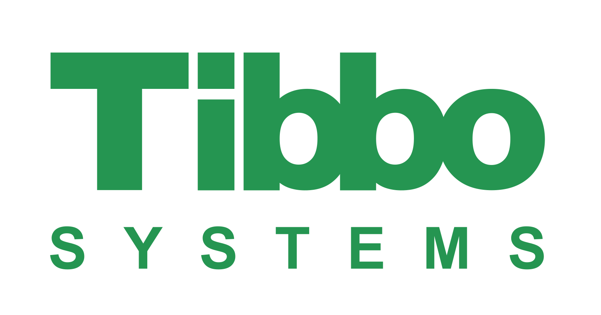
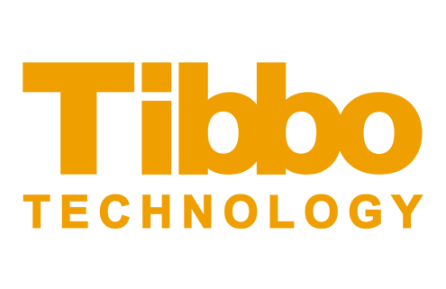

О компании
Международный холдинг Tibbo — лидер в области аппаратных и программных решений для Интернета вещей, управления ИТ-инфраструктурами, автоматизации производственных и технологических процессов, удаленного мониторинга и обслуживания, контроля физического доступа и комплексной автоматизации центров обработки данных. Две основные компании, входящие в Tibbo, это Tibbo Systems (Россия) и Tibbo Technology (Тайвань).
Компания Tibbo Systems — ведущий российский разработчик программного обеспечения для систем управления и мониторинга. Мы оказываем услуги по внедрению, сопровождению и доработке ПО и программно-аппаратных комплексов, созданных на базе платформы Tibbo AggreGate. Основанная в 2002-м году, Tibbo Systems занимается разработкой как самой IoT платформы AggreGate, так и производных продуктов для различных вертикальных рынков. Основа штата компании — профессиональные разработчики ПО и инженеры по ИТ-инфраструктурам, АСУ ТП и автоматизации зданий, системам физической безопасности и другим областям Интернета вещей.
Компания Tibbo Technology — производитель программируемых встраиваемых модулей и контроллеров для систем автоматизации. Недавно предложенная нами модульная система управления Tibbo Project System (TPS), представляющая из себя конструктор на основе миниатюрных модулей ввода-вывода Tibbits, получила широкую огласку благодаря гибкости архитектуры и привлекательному внешнему виду. Последний заработал Компании награду на конкурсе дизайна RedDot.
Tibbo Technology является не только разработчиком и производителем аппаратных продуктов, но также поставляет удобные программные средства быстрого проектирования и отладки приложений для модулей и контроллеров Tibbo на языках Tibbo BASIC и Tibbo C.
Головной офис Tibbo Technology находится в Тайбэе (Тайвань). Одним из принципов компании является размещение производства исключительно на Тайване, что обеспечивает высокое и постоянное качество сборки.
В партнерскую сеть Tibbo входят дистрибуторы, OEM-производители и системные интеграторы из более чем 50 стран мира.
 